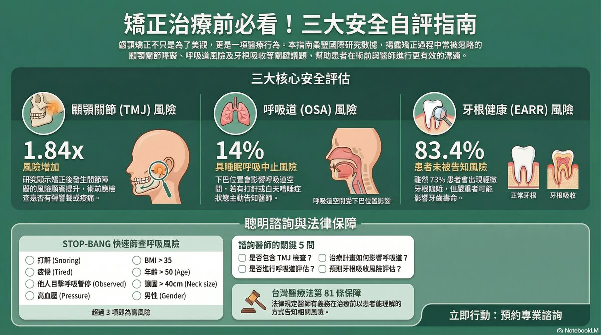
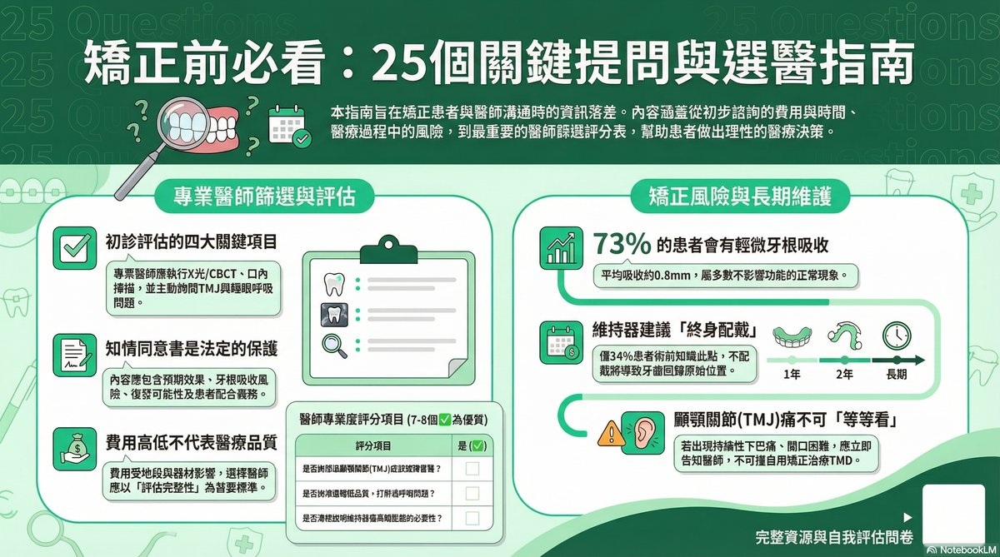
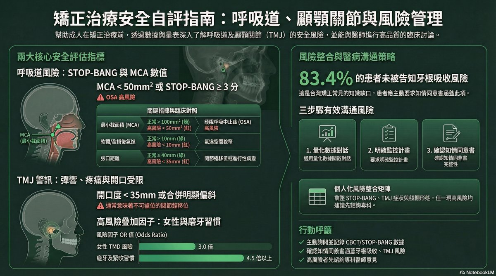
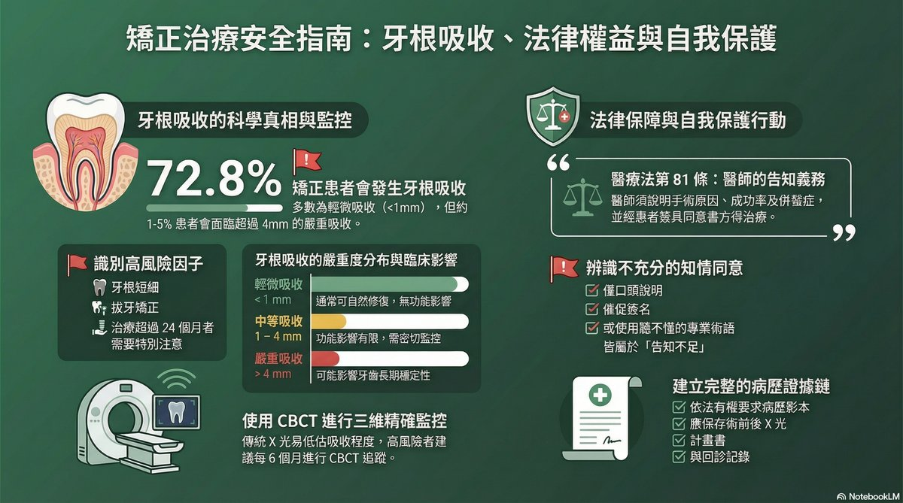
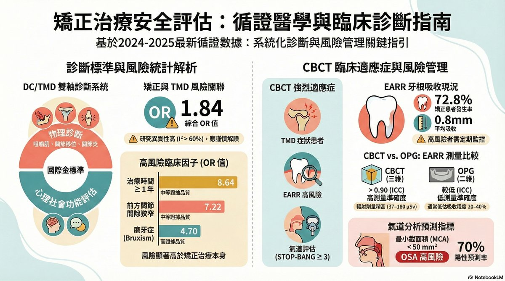
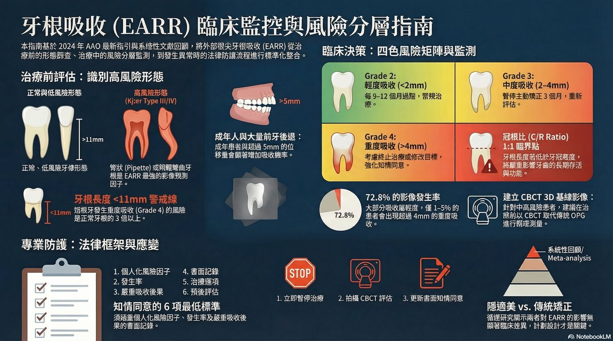

矯正不只是讓牙齒變整齊——開始治療前，了解顳顎關節、呼吸道與牙根的評估，讓你與醫師的溝通更有品質。
這些評估不是要嚇你——而是讓你在治療前就準備好正確的問題，與醫師做最有效的溝通。
顳顎關節在耳朵前方，負責開口咬合。矯正前若未評估，治療後可能出現彈響、疼痛或開口受限。
常見症狀：臉頰痠、耳前彈聲、開口受限、頭痛
矯正後風險增加 1.84 倍某些矯正方式可能影響呼吸道空間。如果你有打鼾、淺眠或白天嗜睡的問題，矯正前應先評估。
STOP-BANG 問卷可在 5 分鐘內完成篩查
矯正族群 OSA 盛行率約 14%矯正移動牙齒時，約 72.8% 的患者牙根尖端會有輕微縮短。大多數不影響日常，但高風險族群需要特別監測。
平均 0.79mm，嚴重（>4mm）發生率 1-5%
高風險：上顎側門牙、療程長者選擇適合你的學習深度
我是第一次了解矯正安全，想用輕鬆的方式了解基礎知識。
我想了解實際數據，知道每個風險發生的機率和應對方法。
我想看 OR 值、CI 區間、DC/TMD 診斷標準與完整文獻數據。
從輕鬆入門到學術深度，選擇最適合你的方式

用生活化的方式了解矯正安全評估的核心概念。不需要記學術名詞——只需要知道：矯正前應該問醫師哪些問題？有哪些症狀需要特別提醒醫師？
這個等級適合：初次諮詢前的患者、高中生家長、任何對矯正安全感到困惑的人。


了解每個風險的實際發生率與科學數據。包含 STOP-BANG 篩查問卷解讀、TMD 量化風險、EARR 監測頻率，以及如何與醫師討論這些數據。
適合：有一定知識基礎、想更全面了解風險的成年患者或家長。

72.8% 的患者在矯正治療後有牙根縮短現象，但大多數輕微且不影響功能。了解哪些人是高風險族群、應該如何監測，以及你有哪些知情同意的基本權利。

完整的統計數據、診斷標準與臨床決策樹。包含 DC/TMD 雙軸診斷系統、CBCT 適應症（MCA<50mm²）、OR/CI 值與系統性文獻回顧結果。
適合：牙科醫師、醫學生、研究者。

基於 Levander 分級、Kjær 根形態分類（Type III OR=3.2）的四色風險矩陣。包含 CBCT vs OPG 監測精準度比較、ICC 值與監測頻率建議。
由 Google NotebookLM AI 根據 6 份學術文件生成，點擊直接觀看，無需登入
由 NotebookLM AI 自動生成，視覺化呈現關鍵學術數據。點擊任何圖片可放大查看。
共 6 份 AI 生成的專業簡報，含豐富數據圖表，點擊即可在瀏覽器直接瀏覽，無需下載
回答以下問題，初步了解你在矯正前可能需要特別注意的風險。此問卷僅供參考，不取代專業診斷。
選擇最符合你狀況的答案。完成後系統會給出初步建議，告訴你哪些方面需要在諮詢時特別詢問醫師。
注意：此問卷為衛教工具，不能取代正式醫療評估。
1. 你有沒有以下任何一個症狀？（選一個最符合的）
2. 你的咬合（上下牙咬合時）有沒有以下情況？
3. 你有沒有打鼾的習慣？（家人或伴侶反映）
4. 你白天是否常感到疲倦或睡醒後仍覺得沒睡飽？
5. 你是否屬於以下族群？（勾選符合的）
6. 你的上顎有沒有比較細長、尖錐形狀的牙根？（X光片可以看到）
7. 你預計的矯正療程有多長？或醫師曾說過療程需要多久？
8. 你的矯正醫師有沒有主動說明以下任何一項風險？
所有文件均為 PDF 格式，可免費下載。建議在矯正初診前閱讀，並將重要問題帶去諮詢。
製作說明、資料來源與免責聲明
本網站所有文字內容、圖表與影片摘要均由 Claude AI（Claude Cowork） 自動生成，學術數據引用自 SciSpace AI Agent 針對 456 篇國際學術論文（2018–2024）所進行的系統性文獻回顧。
⚠️ 重要提醒：本網站資料僅供衛教參考，不構成個人醫療診斷或法律建議，本站製作者不對讀者依本站資訊作出的醫療決定負擔法律責任。實際診療請務必諮詢合格醫療人員。
趙哲暘醫師｜氧樂多牙醫診所
齒顎矯正專科，結合 AI 工具整理國際學術文獻，希望讓每位患者在開始矯正治療前，都能獲得足夠的安全評估資訊，與醫師進行有品質的溝通。
本網站依照「全自動知識發布流程 SOP v4.0」建置，流程包含：
更新日期：2026-04-02｜網站版本：v4.0
本站收錄的法律資訊涵蓋台灣醫療法第 63、70、81 條，以患者保護為核心出發，說明醫師的告知義務與患者申請病歷的權利。此資訊係教育性質，不提供個案法律意見。如有法律糾紛，請諮詢合格律師或聯繫所在縣市衛生局。完整法律分析請 下載法律分析 PDF，申訴流程請 下載申訴指南。